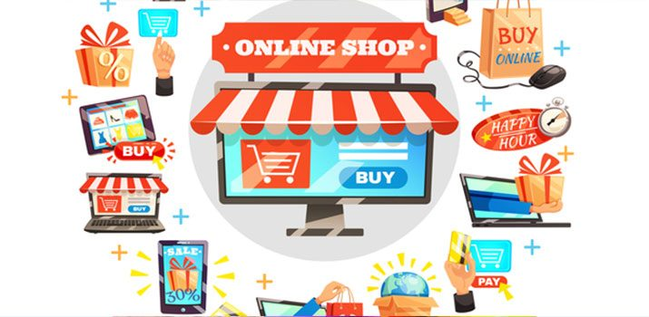
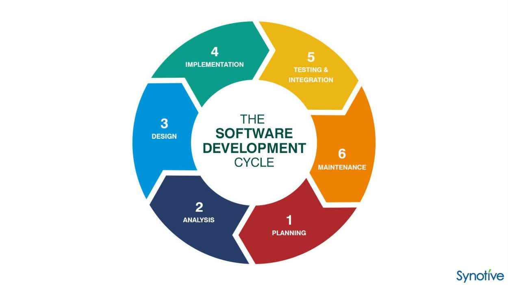
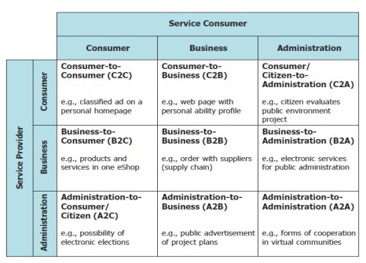
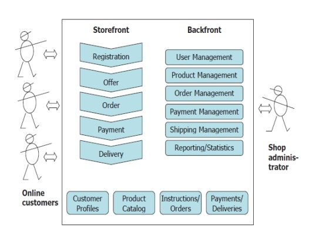

<!DOCTYPE html>
<html lang="en">
<head>
	<meta charset="UTF-8">
	<meta name="viewport" content="width=device-width, initial-scale=1.0">
	<title>pertemuan_10</title>
	<link rel="stylesheet" href="style.css">
</head>
<body>
	<div class="navigation">
		<div class="prev">
			<a href="">
				<h4>Prev - Pertemuan_9</h4>
			</a>
		</div>
		<div class="next">
			<a href="">
				<h4>Next - Pertemuan_11</h4>
			</a>
		</div>
	</div>
	<div class="container">
		<div class="judul">
			<h2>PERTEMUAN 10</h2>
			<h2>SISTEM E-COMMERCE DAN E-BUSINESS</h2>
		</div>
		<h3>TUJUAN PEMBELAJARAN</h3>
		<p>Setelah mengikuti materi pada pertemuan ke-10 ini mahasiswa mampu 
			mengetahui tentang sistem dan konfigurasi E-Commerce dalam bisnis, serta 
			kendala – kendala dalam aplikasinya.
		</p>
		<h3>URAIAN MATERI</h3>
		<div class="cabang-materi">
			<ol type="1">
				<li class="sub-judul">Definisi E-Comerse</li>
				<p>Merupakan cara perdagangan elektronik meliputi aktifitas jual beri suatu 
					barang atau penyebaran serta pemasaran barang dan jasa lewat media 
					elektronik. Electronic commerce, biasanya ditulis sebagai E-commerce, adalah 
					perdagangan produk atau jasa menggunakan jaringan komputer, seperti 
					internet. Proses yang ada dalam Bisnis E-Commerce:
				</p>
				<div class="cabang-materi">
				  <ol type="a">
					<li>Penjualan menggunakan website</li>
					<li>Pesanan dapat dilakukan secara langsung dan otomatis mendapatkan tagihan.</li>
					<li>Akun pelanggan di Otomasi dengan aman (baik data kartu kredit maupun debit).</li>
					<li>Penjual berpartisipasi secara langsung untuk menyediakan barang di pasar 
						online kepada konsumen. </li>
					<li>Penjualan dan Pembelian secara Business to Business.</li>
					<li>Data dikumpulkan dan digunakan untuk kontak, baik melalui web maupun 
						media sosial.</li>
					<li>Dapat melakukan pertukaran data elektronik (Business to Business).</li>
					<li>Penggunaan e-mail dan newsletter untuk informasi promosi kepada konsumen.</li>
					<li>Dalam memunculkan produk baru dan layanan baru produsen terlibat dalam pre-retailnya.</li>
					<li>Teknis pembayaran dilakukan secara langsung dengan bekerja sama 
						dengan bank penyedia layanan transaksi elektronik. </li>
					<li>Tracking/Pelacakan pembelian barang atau jasa yang dilakukan pelanggan.</li>
				  </ol>					
				</div>
				<p>Pretail (juga disebut sebagai pre-retail, atau pre-Commerce) adalah 
					sub-kategori dari E-commerce dan ritel online untuk memperkenalkan produk 
					baru, layanan, dan merek ke pasar dengan pre-launching secara online, 
					terkadang sebagai reservasi dalam jumlah terbatas sebelum rilis, realisasi, atau 
					ketersediaan komersial. Pretail mencakup perdagangan pra-penjualan, 
					pengecer pre-order, pasar inkubasi, dan komunitas crowdfunding. Ekonomi 
					Digital mengacu pada ekonomi yang (secara substansial) didasarkan pada 
					teknologi komputasi. 
				</p>
				<p>E-commerce dapat diartikan sebagai pertukaran barang dan jasa yang 
					biasa dilakukan oleh orang atau suatu organisasi yang independen yang 
					didukung oleh penggunaan sistem teknologi informasi dan komunikasi yang 
					kuat dan infrastruktur jaringan standar global secara komprehensif. Pada 
					prosesnya keamanan data dan privasi data serta kepatuhan terhadap hukum 
					dan kebijakan serta prosedur lainnya, tentu saja harus dijamin.
				</p>
				<p>Menurut Zwass (2014) menjelaskan e-commerce berasal dari apa yang 
					disebut 5-C-model. yaitu:</p>
				<div class="cabang-materi">
					<ol type="a">
						<li>Commerce</li>
						<p>Persayaratan transaksi dan fasilitas transaksi tertentu karena adanya 
							kecocokan antara pemasok dan pelanggan dalam sebuah market place.</p>
						<li>Collaboration</li>
						<p>Individu maupun perusahaan akan membentuk jaringan yang cukup luas 
							karena dihubungkan oleh Web. Dengan adanya web, maka kolaborasi 
							antara individu maupun perusahaan yang terlibat akan tecipta menembus 
							ruang dan waktu. </p>
						<li>Communication</li>
						<p>Web yang berperan sebagai media interaktif, telah melahirkan sebuah 
							Multiplisitas.produk.media. Web telah menjadi sebuah media untuk 
							mengekspresikan diri.</p>
						<li>Connection</li>
						<p>Jaringan atau networking digunakan untuk melakukan suatu pemasaran 
							produk maupun proses perdagangan dengan melibatkan internet sebagai 
							jaringan utama agar bisa mengakses platform-platform e-commerce.</p>
						<li>Computation</li>
						<p>Infrastruktur daripada suatu jaringan atau networking menjadi suatu utilitas 
							untuk menjalankan proses jual beli melalui e-commerce.</p>
					</ol>					
				</div>
				<p>Munculnya E-commerce juga secara signifikan menurunkan hambatan 
					untuk masuk dalam penjualan berbagai jenis barang; banyak pemilik kecil 
					berbasis rumah dapat menggunakan internet untuk menjual barang. Pemasok
					harus menutup toko mereka dan mengubah model bisnis mereka ke model Ecommerce untuk tetap menguntungkan dalam bisnis.
				</p>
				<p>Seringkali, pemasok kecil menggunakan situs lelang online seperti eBay 
					atau menjual melalui situs web perusahaan besar, untuk memastikan bahwa 
					mereka dilihat dan dikunjungi oleh calon pelanggan.
				</p>
				<li class="sub-judul">Model Bisnis yang Berkaitan dengan E-Commerce</li>
				<p>Bisnis berbasis internet, dalam bab ini kita daftar beberapa kegiatan 
					bisnis yang khas, yang didasarkan pada internet. E-commerce pelaku bekerja 
					sama dengan perusahaan tersebut dan menggunakannya sebagai penyedia 
					layanan tertentu.
				</p>	
				<div class="cabang-materi">
					<ol type="a">
						<li>Access Provider</li>
						<p>Access Provider berfungsi untuk memastikan pengguna ecommerce bisa akses (teknis) atau tersambung ke internet. Kita.harus
							berpikir bahwa agar kita dapat mengakses internet aka seseorang harus
							membayar penyedia akses.</p>
						<li>Search Engine</li>
						<p>Pada proses e-commerce menggunakan search engine yang 
							merupakan perangkat lunak dan sudah pasti harus terkoneksi dengan 
							internet terlebih dahulu agar bisa digunakan. Hal tersebut merupakan 
							langkah pembuka untuk memulai suatu kegiatan yang menggunakan
							internet jika seseorang mencari peluang bisnis. Yellow pages merupakan 
							jenis bisnis tradisional dan serupa. Pada yellow pages perusahaan yang 
							terdaftar akan dikelompokkan menurut lokasi serta cabangnya.
						</p>
						<li>Online Shop</li>
						<p>Online shop merupakan situs jual beli online. Pada situs tersebut 
							pembeli dapat membeli barang keperluannya secara online tanpa harus 
							bertemu langsung dengan penjual.
						</p>
						
						<li>Content Provider (Penyedia Konten)</li>
						<p>Content Provider dapat juga disebut sebagai pedagang informasi 
							yang menawarkan konten secara digital seperti informasi, musik, dokumen, 
							berita.</p>
						<li>Online Marketplace / Electronic Mall</li>
						<p>Sebuah pasar online adalah sebuah situs web, di mana pemasok 
							dan calon pelanggan dapat datang bersama-sama seperti di pasar nyata di 
							sebuah kota kecil. Sebuah E-Mall adalah seperangkat toko online, yang 
							dapat ditemukan di satu situs web.</p>
						<li>Virtual Community (Komunitas Virtual)</li>
						<p>Sebuah komunitas virtual adalah platform untuk komunikasi dan 
							pertukaran pengalaman. Hal ini mirip dengan club virtual atau asosiasi.</p>
						<li>Information Broker</li>
						<p>Sebuah informasi broker mengumpulkan dan memberikan informasi, 
							misalnya informasi sehubungan dengan produk, harga, availability atau data 
							pasar, data ekonomis, informasi teknis. Model bisnis tradisional dan serupa 
							adalah majalah yang menjalankan tes komputer, mobil, barang konsumsi, 
							restoran.</p>
						<li>Transaction Broker</li>
						<p>Broker transaksi adalah seseorang atau organisasi untuk 
							mengeksekusi transaksi penjualan. Terkadang broker tersebut digunakan 
							untuk menyembunyikan pelanggan sebenarnya kepada supplier. Broker 
							transaksi adalah agen yang merupakan ahli di area tertentu dan dapat 
							mengambil alih bagian dari sebuah bisnis. Model bisnis tradisional yang 
							serupa adalah salesman.</p>
						<li>Online service provider/cloud service provider (CSP)</li>
						<p>Penyedia layanan online menyediakan layanan yang dapat 
							dijalankan secara elektronik, misalnya layanan perangkat lunak aplikasi atau layanan infrastruktur ICT seperti layanan penyimpanan atau pencadangan. Jika organisasi ini menggunakan teknologi Cloud disebut 
							penyedia Layanan Cloud.</p>
						</ol>					
				</div>	
				<li class="sub-judul">Kerugian dan Keuntungan E-Commerce</li>
				<p>E-Commerce adalah ruang yang sangat kompetitif. Dibutuhkan jumlah 
					modal besar, bahkan untuk mencoba bersaing dengan e-commerce 
					utama/lainnya. Pemain dikompetisi ini dapat membuat margin atau pendapatan 
					tipis yang dapat didorong terutama melalui diskon. E-commerce dapat 
					dianggap sebagai permainan Zero-Sum. Jadi perusahaan bersaing dengan 
					menciptakan pengalaman digital yang memungkinkan seseorang untuk dengan 
					cepat dan mudah menemukan dan membeli. Baik pada desktop, tablet, atau 
					perangkat seluler, perusahaan yang menang dalam e-commerce membuatnya 
					mudah dan tanpa gesekan untuk menemukan produk atau layanan yang 
					diinginkan, memahami bagaimana hal itu sesuai dengan kebutuhan, dan 
					membelinya. Kemudian situs ini dapat memaksa pelanggan mereka untuk 
					kembali lagi dan lagi untuk membeli lebih banyak di toko online. Untuk 
					melakukannya, e-commerce perusahaan menggunakan pemasaran dan 
					periklanan yang erat digabungkan dengan pengalaman pengguna dengan 
					prospek atau gagasan pelanggan dan bekerja untuk memenuhi niat mereka. 
					Orang datang ke e-commerce pengalaman dengan tujuan tertentu dalam 
					pikiran yaitu untuk mempelajari lebih lanjut tentang produk dengan membaca
					informasi produk dan ulasan sosial, untuk membandingkan harga dan promosi, 
					dan untuk membeli produk.
				</p>	
				<p>Perusahaan E-Commerce terkemuka menggunakan data dan analitik 
					untuk bersaing dan mereka menggunakan banyak data yang berbeda untuk 
					melakukannya. Data dikumpulkan dan dianalisis tentang siapa yang 
					mengunjungi situs e-commerce, saat mereka berkunjung, Halaman apa yang 
					mereka lihat, dan situs atau sumber apa yang mereka berasal (atau saluran 
					pemasaran). Informasi lainnya juga dikumpulkan tentang perilaku pengguna, seperti interaksi pengguna dan peristiwa di situs, data terkait produk yang 
					dilihat, promosi yang digunakan, halaman yang dikunjungi, waktu yang 
					dihabiskan, query dimasukkan dalam pencarian, dan banyak titik data lainnya, 
					seperti urutan harga produk, metode pengiriman yang digunakan, dan informasi 
					pembayaran
				</p>
				<p>Analisis e-commerce juga melibatkan bekerja dengan TI dan rekayasa 
					dalam pengembangan perangkat lunak dan internet yang sesuai life cycle. Hal 
					ini membutuhkan tim analisis untuk berpartisipasi dan mungkin memimpin 
					kegiatan teknis yang diperlukan untuk memberikan atau mendukung analisis, 
					seperti pengumpulan data, ekstraksi, pemuatan, transformasi, tata kelola, 
					keamanan, dan privasi. Bentuk life cycle yang digunakan e-commerce.
				</p>
				
				<li class="sub-judul">Jenis Bisnis E-Commerce</li>
				<p>Revolusi industri sering dibandingkan dengan evolusi masyarakat 
					informasi dalam hal konsekuensinya. Penggunaan teknologi informasi dan 
					komunikasi memberikan kesempatan untuk memperluas kemampuan individu 
					dan organisasi untuk bertindak, untuk memperkuat kontak lintas-perbatasan, 
					dan untuk mengembangkan masyarakat yang terbuka dengan budaya 
					orisinalitas dan variasi.
				</p>
				<p>Perkembangan sektor produksi karena faktor informasi kurang signifikan 
					dibandingkan dengan perubahan pada teknologi dan perkembangan ekonomi 
					ke dalam bisnis elektronik.
				</p>
				<p>Bisnis elektronik berarti memulai, menata, dan melaksanakan proses 
					bisnis elektronik. Dengan kata lain, bertukar layanan dengan bantuan jaringan 
					komunikasi publik atau swasta, termasuk internet dalam rangka mencapai nilai 
					tambah. Perusahaan (bisnis), lembaga publik (administrasi), serta pribadi 
					(konsumen) dapat menjadi penyedia layanan dan konsumen Jasa. Yang 
					penting adalah bahwa hubungan bisnis elektronik menghasilkan nilai tambah, 
					yang dapat mengambil bentuk baik moneter atau kontribusi tak berwujud.
				</p>
				<p>Berikut adalah gambar yang menunjukkan tiga kelompok yang paling 
					penting dari peserta pasar, bersama dengan kemungkinan koneksi bisnis 
					mereka. Masing-masing peserta dapat muncul sebagai penyedia atau 
					konsumen layanan. Dengan demikian, sembilan hubungan bisnis dasar 
					berkembang secara total.
				</p>
				
				<div class="cabang-materi">
					<ol type="a">
						<li>Consumer to Consumer (C2C)</li>
						<p>Transaksi barang atau jasa yang 
							dilakukan konsumen ke konsumen. C2C dibagi dalam 2 model yaitu 
							marketplace dan classifed. Dalam model marketplace, konsumen sebagai 
							penyedia barang dan jasa membutuhkan platform sebagai wadah 
							transaksi/pihak ke-3. Di dalam platform tersebut, konsumen yang bertindak 
							sebagai penjual dapat memposting berbagai barang atau jasa yang dapat 
							dibeli oleh konsumen lainnya dengan cara Transaksi non tunai. Contoh Tokopedia, Bukalapak, Shoope, dll. Untuk model classified, website/aplikasi 
							sebagai tempat untuk costumer sebagai penjual memposting barang atau 
							jasa beserta infomasi lainnya dan costumer sebagai pembeli pencari barang 
							atau jasa. Model ini memberikan kebebasan terhadap penjual dan pembeli 
							untuk bertransaksi secara langsung dengan sistem cash on delivery (COD), 
							dan pihak website/aplikasi tidak memfasilitasi transaksi jual beli online. 
							Contoh OLX dan Kaskus.</p>
						<li>Consumer to Business (C2B)</li>
						<p>Transaksi jual beli produk atau jasa 
							dilakukan dari konsumen/perorangan kepada perusahaan. Contoh supir 
							truck/mobil box menawarkan jasa angkut dan antar barang pada aplikasi 
							GoBox/Delivery, dan usaha/perusahaan yang membutuhkan jasa angkut 
							dan antar barang memesan via aplikasi tersebut dengan kesepakatan harga 
							yang tercantum dalam aplikasi.</p>
						<li>Consumer/Citizen to Administrator/Government (C2A)</li>
						<p>proses transaksi 
							elektronik yang dilakukan individu kepada Lembaga pemerintah. Contoh 
							pembayaran pajak, iuran bpjs secara online.</p>
						<li>Business to Consumer (B2C)</li>	
						<p>proses transaksi yang dilakukan antara 
							produsen barang atau jasa langsung kepada konsumen akhir, Contoh 
							website bro.do adalah produsen sepatu lokal yang memproduksi sepatu 
							dan menjualnya langsung kepada konsumen dengan stok yang tersedia 
							atau dengan pre-order.</p>
						<li>Business to Business (B2B)</li>
						<p>proses transaksi online yang dilakukan antar 
							perusahaan atau jenis usaha barang atau jasa secara tender atau lelang. 
							Contoh perusahaan konveksi membutuhkan bahan baku kain, melakukan 
							tender pengadaan bahan baku kain melalui website eproc.id.</p>
						<li>Business to Administration/Government (B2A)</li>
						<p>E-Commerce yang 
							menjual produk atau jasa kepada lembaga pemerintahan melalui sistem 
							tender. Contoh Perusahaan A mengikuti tender online yang diadakan 
							pemerintah daerah DKI Jakarta melalui website lpse.jakarta.go.id.</p>
						<li>Administration/Government to Consumer (A2C)</li>
						<p>pemerintah 
							membangun dan menerapkan portofolio teknologi informasi dengan tujuan 
							memperbaiki hubungan interaksi dengan masyarakat. Contoh e-Tilang adalah aplikasi yang dibuat untuk masyarakat mengetahui besaran denda tilang sesuai dengan surat tilang yang diterima</p>
						<li>Administration/Government to Business (A2B)</li>
						<p>membentuk lingkungan 
							bisnis yang kondusif secara online agar perekonomian sebuah negara 
							berjalan dengan semestinya. Contoh bisnis atau usaha dapat melaporkan 
							setoran pajaknya kepada KPP secara online melalui website pajak.go.id.</p>
						<li>Administration/Government to Administration/Government (A2A)</li>
						<p>kebutuhan interaksi antara satu pemerintah dengan pemerintah lainnya 
							setiap harinya dilakukan secara online. Contohnya sistem online antara 
							pemerintahan pusat dengan kedutaan di luar negri untuk mendata warga 
							negaranya saat di luar negri.</p>
					</ol>					
				</div>
				<p>Sebuah toko elektronik (juga sering disebut toko online) adalah sistem 
					perangkat lunak berbasis yang menawarkan barang dan jasa, menghasilkan 
					tawaran/penawaran, menerima pesanan, dan menangani pengiriman dan mode 
					pembayaran.
				</p>
				<p>Gambar berikut menunjukkan garis kasar dari sebuah toko elektronik 
					berdasarkan eSarine produk. Pada prinsipnya, setiap toko online terdiri dari 
					etalase dan backfront. Pelanggan online hanya memiliki akses ke etalase dan 
					dapat mencari informasi tentang produk dan layanan, memesannya sesuai 
					kebutuhan, membayar dan menerimanya. Akses ke backfront khusus 
					disediakan untuk operator toko. Disini produk dan layanan yang dimasukkan ke 
					dalam katalog produk dan berbagai prosedur yang digunakan untuk memesan, 
					membayar, dan pembelian yang ditetapkan. Fungsi yang paling penting dari 
					sebuah toko elektronik sekarang dibahas dengan menggunakan Gambar 
					berikut ini :
				</p>
				
				<div class="cabang-materi">
					<ol type="a">
						<li>Pendaftaran pelanggan online</li>
						<p>seorang pengunjung ke toko elektronik 
							dapat mendaftar dengan mengisi username/email beserta password untuk 
							keamanan lebih biasanya ditambahkan nomor telpon untuk verifikasi dan 
							capcha untuk menghindari autoboot/robot yang registrasi.
						</p>
						<li>Profil pelanggan dan administrasi pelanggan</li>
						<p>data pribadi customer 
							dimasukkan ke dalam database. Selain itu upaya dibuat untuk membangun 
							profil tertentu berdasarkan perilaku pelanggan. Dengan demikian, 
							penawaran yang paling tepat dapat disajikan kepada setiap pelanggan. 
							Namun, aturan komunikasi dan informasi yang diminta oleh pengguna 
							harus dipertimbangkan dan dihormati.
						</p>
						<li>Katalog produk dengan katalog listing</li>
						<p>produk dan layanan direkam 
							dalam katalog produk, dengan atau tanpa harga yang dikutip. Tergantung 
							pada sistem diskon yang dipilih dan penetapan harga pelanggan individu, 
							harga dikutip dihitung dan ditentukan hanya ketika membuat penawaran. 
							Produk individu diringkas dalam kategori sehingga organisasi toko online 
							jelas.
						</p>
						<li>Menawarkan dan memesan</li>
						<p>menggunakan komponen perangkat lunak ini, 
							penawaran dapat dihasilkan barang dan Jasa dapat dibeli sesuai 
							kebutuhan. Keranjang belanja elektronik atau keranjang belanja digunakan 
							oleh pengguna untuk memesan barang dan jasa yang dipilih, dan jika perlu 
							untuk menunjukkan harga total dengan diskon.
						</p>
						<li>Mode pembayaran</li>
						<p>jika pelanggan puas dengan urutannya dan 
							kesepakatan harga dan pengiriman yang terkait, maka dia dapat 
							mengaktifkan pembelian dengan tombol order. Tergantung pada sistem 
							pembayaran, baik proses pembayaran dipicu (misalnya, faktur diberikan) 
							atau pembayaran dikreditkan secara langsung (misalnya, pembayaran 
							dengan kartu kredit dan Payment Gateway).
						</p>
						<li>Pilihan pengiriman</li>
						<p>jenis pengiriman biasanya ditawarkan oleh toko atau 
							penjual, jenis yang ditawarkan beragam pilihan waktu pengiriman, dan 
							asuransi pada saat pengiriman.
						</p>
						<li>Ukuran koneksi pelanggan</li>
						<p>kontak pelanggan dipertahankan setelah 
							pembelian dengan menawarkan informasi penting barang jual dan jasa.
							Langkah ini membuat kontak pelanggan dapat melalui barang dan jasa dan 
							meningkatkan koneksi pelanggan.</p>
						<li>Konstruksi dan operasi,</li>
						<p>sebuah toko elektronik harus direncanakan dan 
							dipersiapkan secara rinci. Selain itu, keputusan penting harus dibuat. 
							Produk dan layanan manakah yang harus ditawarkan secara online? 
							Apakah toko elektronik harus ditawarkan dalam beberapa bahasa, dan jika 
							demikian, bahasa yang lebih disukai? Apakah ada perbedaan dalam 
							pengaturan untuk penawaran, pembayaran, dan kesimpulan dibandingkan.</p>
						
					</ol>					
				</div>
				<p>Sistem Pembayaran melalui E-Commerce memerlukan suatu 
					persyaratan yang mencangkup :</p>
				<div class="cabang-materi">
					<ol type="a">
						<li>Konfidensialitas untuk menjamin bahwa konsumen, pedagang dan informasi 
							transaksi pembayaran tetap konfidensial</li>
						<li>Integritas dari semua data yang ditransmisikan melalui jaringan publik 
							seperti internet.</li>	
						<li>Otentikasi dari pihak pembeli maupun pihak pedagang.</li>
						<li>Keamanan berkaitan dengan perlindungan atau jaminan keamanan dari 
							pihak-pihak yang tidak bertanggung jawab.</li>
						<li>Mekanisme privacy untuk pertukaran informasi yang sifatnya umum 
							maupun pertukaran data pembayaran.</li>
						<li>Divisibilitas, berkaitan dengan spesifikasi praktis transaksi baik untuk 
							volume besar maupun transaksi skala kecil.</li>	
						<li>Interoperabilitas dari perangkat lunak, maupun jaringan dari penerbit kartu 
							kredit dan perbankan.</li>						
					</ol>					
				</div>	
			</ol>
		</div>
	</div>
	
</body>
</html>